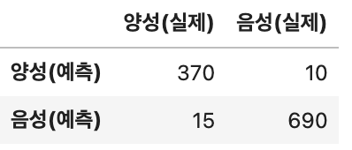

단점: 많은 데이터를 삭제하게 될 경우 정보 손실이 크고, 무작위로 누락된 데이터가 아닌 경우 편향을 초래할 수 있다.
평균값, 중앙값, 최빈값 대입 (Mean/Median/Mode Imputation)
장점: 쉽고 빠른 방법이며, 무작위 결측치에 적합하다.
단점: 데이터의 분포를 왜곡할 수 있고, 실제 분산을 과소평가할 수 있다. 또한 실제로 존재하지 않는 데이터를 가정하는 것이므로 주의해야한다.
회귀 대체법 (Regression Imputation)
장점: 다른 변수들과의 관계를 활용하여 결측치를 대체할 수 있다.
단점: 실제 분산을 과소평가할 수 있으며, 과적합(overfitting)을 일으킬 가능성이 있다.
머신러닝 기반 대체법 (Machine Learning Based Imputation)
장점: 높은 정확성을 달성할 수 있으며, 다양한 패턴과 상관관계를 포착할 수 있다. (예: KNN, RandomForest 등)
단점: 모델의 복잡성으로 인해 계산 비용이 높을 수 있으며, 오버피팅의 위험이 있다.
여기서는 중앙값 대입하여 결측치를 처리하고자 한다. 기존 데이터 관측치 395개 중 1% 내외에 해당하는 결측치 손실을 줄이고자 한다. 결측치가 존재하는 수치형 변수 중 age는 이산형이면서 연속형 속성 모두 가지고 있으므로, 평균 값을 부여하기 보다는 중간 값을 부여한다.
추가 전처리가 필요한 부분은 현재 Medu, Fedu 등이 명목형 변수지만 현재는 1, 2 등 수치로 표기되어 있다. 이를 분석에 용이하게 코딩할 필요가 있다.
위 전처리 과정을 처리하면 다음과 같다.
0 : 없음, 1 : 초등 교육, 2 : 5-9학년, 3 - 중등 교육 또는 4 - 고등 교육
A와 B 생산라인 각각에서 12개 제품을 샘플로 뽑았다. A 생산라인의 제품 평균은 5.7mm이고 표준편차는 0.03, B 생산라인의 제품 평균은 5.6mm이고 표준편차는 0.04라면 5% 유의수준으로 두 제품의 평균이 차이가 있는지 여부를 검정하라. 단, Z(0.05) = 1.65
3-1번
귀무가설과 대립가설을 세워라.
연구 가설은 다음과 같다.
귀무가설: 생산라인 A와 B 제품의 평균은 같다.
연구가설: 생산라인 A와 B 제품의 평균은 차이가 있다.
3-2번
두 평균이 차이가 있는 지를 검정하라.
둘 분산이 다르므로 등분산 가정 만족하지 않아 독립 t-test 시행
# 데이터 설정mean_A <-5.7std_A <-0.03n_A <-12mean_B <-5.6std_B <-0.04n_B <-12# 무작위 샘플 생성set.seed(123) # 일관된 결과를 얻기 위해 seed 설정sample_A <-rnorm(n_A, mean_A, std_A)sample_B <-rnorm(n_B, mean_B, std_B)# Welch의 t 검정t.test(sample_A, sample_B, var.equal =FALSE) # 두 집단의 분산이 다르다고 가정
Welch Two Sample t-test
data: sample_A and sample_B
t = 8.1968, df = 19.728, p-value = 8.842e-08
alternative hypothesis: true difference in means is not equal to 0
95 percent confidence interval:
0.08517649 0.14339674
sample estimates:
mean of x mean of y
5.705825 5.591539
4번
바이러스 감염 분류표를 보고 베이지안 분류 방법을 사용해 양성으로 예측된 사람이 실제로 양성일 확률을 구하라. 단, 유병률은 0.01로 알려져있다.

베이즈 원리는 P(A|B) = (P(B|A) * P(A)) / P(B)
B는 테스트 결과 양성, A는 실제로 양성
유병률이 0.01이므로 P(A) = 0.01
P(B|A)는 양성이면서 테스트 결과가 양성인 경우며, 실제 양성 중 양성 예측인 370/385
P(B)는 P(B|A) X P(A) + P(B|Ac) X P(Ac); (370/385) X 0.01 + (10/700) X 0.99
.40
5번
정규분포에서 9개 표본을 다음과 같이 추출하였다. [3.1, 3.3, 3.5, 3.7, 3.9, 4.1, 4.3, 4.4, 4.7]; 단, Z(0.05) = -1.65, Z(0.025) = -1.96, T(0.05, 8) = 1.860, T(0.025, 8) = 2.306
5-1번
위 표본의 평균에 대한 신뢰구간을 95% 유의수준에서 구하라.
현재 표본은 정규분포를 띄고 있으며(검정 유의확률 > 0.05), 모분산을 모르므로 t 검정을 실시한다.